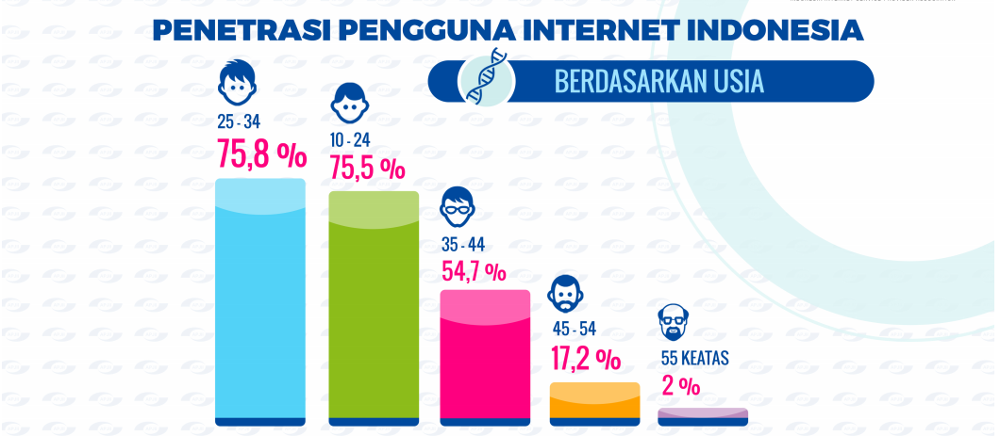

Cara Kerja
Cara kerja internet diawali saat kita menghubungkan PC, laptop, Smartphone, Tablet, atau jenis perangkat lainnya dengan jaringan internet. Perangkat kita nantinya akan tersambung dengan server khusus yang telah disediakan sekaligus dioperasikan oleh Internet Service Provider (ISP). Internet Service Provider (ISP) ini berperan sebagai penyedia link antar browser dan juga menyediakan akses ke server-server tujuan pengguna internet. Terdapat banyak contoh penyedia jaringan/ ISP yang ada di Indonesia, misalnya saja Telkom, Smartfren, Flexi, dan lain sebagainya. Penyedia server ini nantinya bertugas untuk menangani hal-hal yang berkaitan dengan koneksi internet yang didapat dari banyak browser. Saat kita menghubungkan perangkat kita dengan jaringan internet, ada banyak orang (ribuan atau bahkan jutaan pengguna internet lain) yang juga terhubung dengan server yang sama dengan server yang tengah kita gunakan.
Penyedia jaringan/ ISP, kemudian, akan menerima permintaan-permintaan dari browser seperti permintaan akses email, website, penyedia layananan video, dan masih banyak lainnya. Ketika sebuah server tidak mampu menampung semua informasi, secara otomatis browser yang sedang kita akses akan mengalihkan permintaan kita ke server lainnya. Server semacam inilah yang disebut dengan host server. Host server ini berperan menyediakan sekaligus memberikan informasi atau data yang kita butuhkan saja (data spesifik yang kita butuhkan saja). Sekedar tambahan informasi, hampir setiap web atau situs ternama di dunia umumnya memiliki host server yang bisa diakses secara mudah oleh para pengguna internet di dunia.
Penggunaan di Indonesia

Berdasarkan data diatas kita mengetahui bahwa lebih dari setengah penduduk Indonesia memiliki akses internet dengan dominan rentan usia antara 25-34 tahun. Banyak dari mereka yang mengakses internet setiap hari untuk hiburan, media sosial, mengakses berita, pendidikan, bisnis komersial dan layanan publik.
Internet of Things (IoT)

“Untuk mengimplementasikan industri 4.0, salah satu faktor pendukung utamanya adalah ketersediaan infrastruktur digital. Salah satunya adalah internet of things (IoT),” kata Menteri Perindustrian Airlangga Hartarto. Menperin menjelaskan, terdapat lima teknologi digital sebagai fundamental dalam penerapan revolusi industri 4.0 di Indonesia, yaitu IoT, artificial intelligence, wearables (augmented reality dan virtual reality), advanced robotics, dan 3D printing. “Jadi, hari ini kita fokus pada internet of everythings. Ini yang harus dikuasai oleh generasi muda kita,” ujarnya.
IoT merujuk pada jaringan perangkat fisik, kendaraan, peralatan rumah tangga, dan barang-barang lainnya yang ditanami perangkat elektronik, perangkat lunak, sensor, aktuator, dan konektivitas yang memungkinkan untuk terhubung dengan jaringan internet maupun mengumpulkan dan bertukar data. Di dalam peta jalan Making Indonesia 4.0, salah satu program prioritas yang perlu dilaksanakan adalah membangun infrastruktur digital nasional. Bahkan, berdasarkan penelitian dari McKinsey & Company, infrastruktur digital di Indonesia akan menciptakan peluang bisnis baru hingga USD150-200 miliar pada tahun 2025-2030.
”Apalagi, Indonesia juga menjadi salah satu negara dengan pengguna internet tertinggi di dunia, yang mencapai 143,26 juta orang atau lebih dari 50 persen total penduduk di Indonesia,” tutur Airlangga. Oleh karena itu, guna mencapai target Making Indonesia 4.0, diperlukan 17 juta tenaga kerja yang dapat menguasai teknologi digital. “Aspirasi besarnya adalah optimisme masa depan, dengan target pada tahun 2030, Indonesia masuk dalam jajaran 10 negara yang memiliki perekonomian terkuat di dunia. Dengan catatan, produktivitas naik dua kali lipat, nett ekspor mencapai 10 persen, dan anggaran riset hingga dua persen,” paparnya.